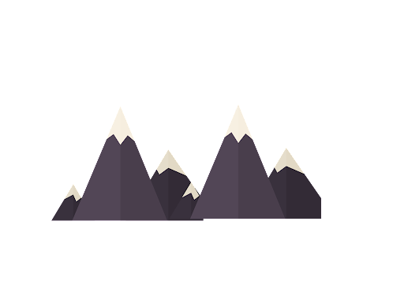
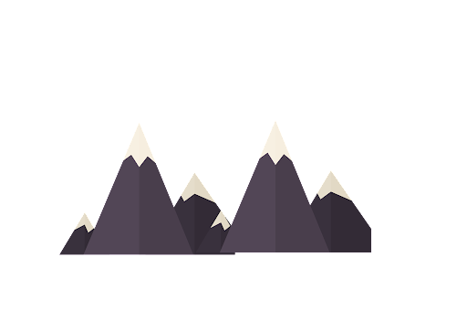

Mirjaz Sarieva
Member of the 'Kelechek' project

Member of the 'Kelechek' project

I'm a student at the magnificent educational center 'Jyldyz Academy', learning a new profession, communication skills, a new way of life and much more.

I'm in the third month of the course and have already learned a lot of information about programming and using other tools to simplify tasks.I already know HTML, CSS and how to use Git,GitHub, Notion,Trello,Canva etc.
By participating in various Challenges and Projects, we develop critical thinking, public speaking skills, and team support. We try to use our time correctly and productively. We learn to quickly find issues and resolve solutions to it.
I'm a perfectionist person, I try to do everything at the highest level. I always believe that tomorrow will be better than today. Always glad to meet new people, you can find me on the links below
CONTACT ME